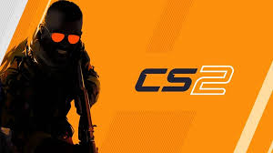
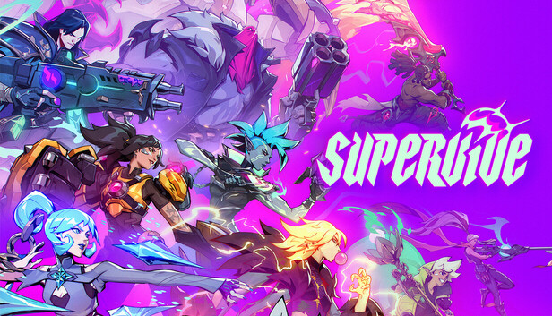
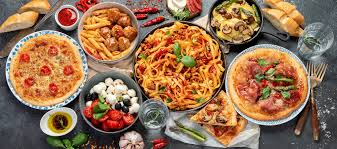
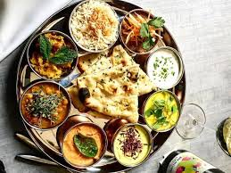

Hobbies
Here is a list of all my favourite hobbies. You can find all of them below.
-
Gaming
League of Legends
MOBA game, 5vs5 players where main focus is to destroy ennemy's base
CS2
FPS game. The team who wins the most rounds, wins the game
Supervive
Team game. Supervive was recently released and fun to play
This is one of my favourite games, yet the most hated... However, a fun game while playing with friends and do have a fairly high level of toxicity. This game is about securing objectives across the map while trying to kill ennemies and staying alive as much as possible. Doing so increases your chance of victory.
You can find me playing in different servers, but mainly play in SG serverOne of my best FPS games so far. Started with CS1.6, with a brief stint in CS:GO andd now find myself with CS2. A strategic game while having a good reaction time will enhance your chances of winning. You do have a wide variety or weapons you can choose from, depending on your taste and playstyle. My personal facourite is AWP.A game which was recently released in the second half of 2024. A team game as well and fun to play. The aim is to elimiate all your ennemies, sort of battle royale in PUBG.Decent game, with a variety to heroes to choose from, all with a unique playstyle. -
Foodie
I am the kind of person who cannot say to food. I am usually open to try different cuisines but here below is my favourite dish/cuisine.
Fav Food
Asian
I like chinese cuisine for their different kind of dish.
Italian
There's nothing much I can tell about Italian cuisine. Pizzas and pasta are just delicious
Indian
Indian Cuisine is one of my favourites because of the flavours and different spices that make their taste unique and tasty.
-
Hiking
I love hiking even though I have a acrophobia (fear of heights).
- Trails
- Mountains
I usually look for upcoming trails and try to participate whenever possible.
Usually go to mountain climbing with friends. Have not gone to much mountains, but went to fairly easy ones such as Le Pouce.
I am open to climb any mountain as long as its difficulty level is not intense. Do not hesitate to drop your recommendations
-
Football
Hear me out! My favourite is Liverpool, but I am pretty sure there are a lot of rivals out there.

I have developped this passion late in my teen years, around 17 years old, and started to play as a striker. However, I transitioned to attacking midfield and Left Winger later on. Hope we can see each other on the pitch one day